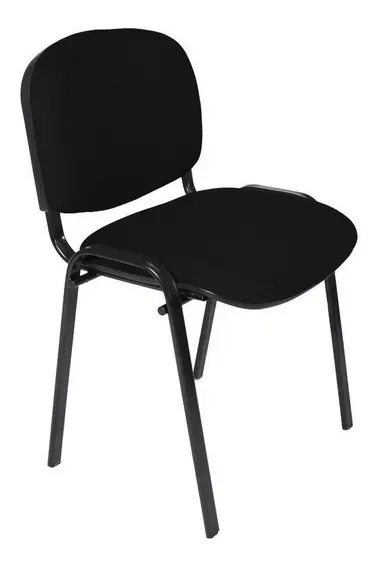
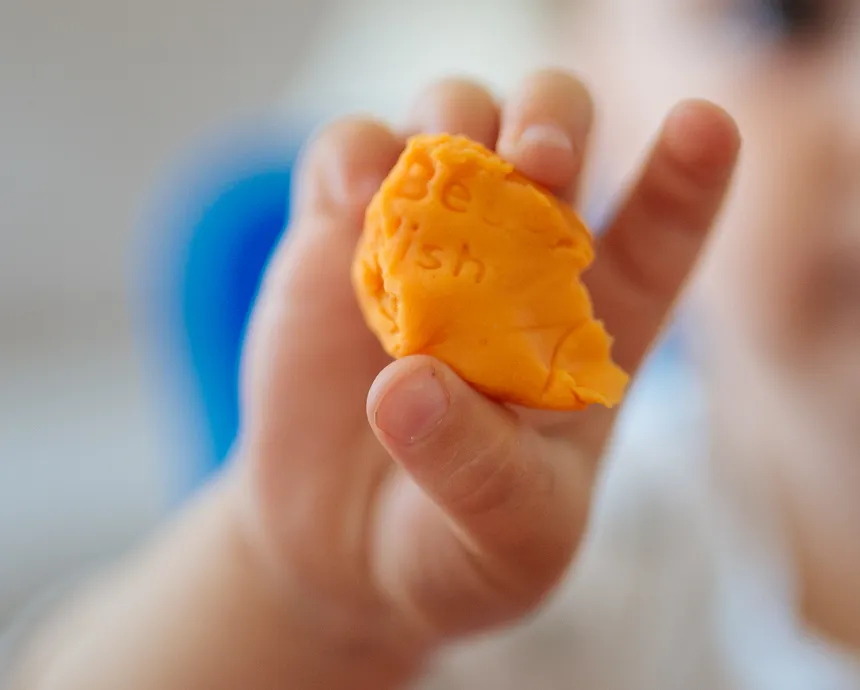
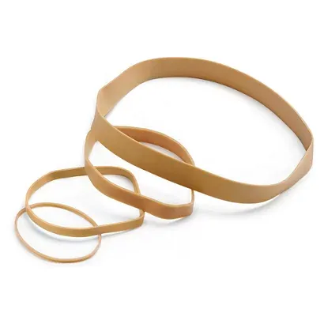

1 Fuerzas: tipos de fuerzas, tipos de cuerpos y Ley de Hook
Nombre:______________________________________________________________________________
Una fuerza es toda causa que pueda deformar un objeto o modificar su estado de reposo o movimiento. La unidad de fuerza en el Sistema Internacional es el Newton (N).
Los efectos de una fuerza son:
- Poder mover un cuerpo que estaba parado.
- Poder parar un cuerpo que se estaba moviendo.
- Poder modificar la velocidad de un objeto.
- Poder producir deformaciones.
Las fuerzas pueden actuar de distintas formas:
Por contacto: por ejemplo, al empujar una silla o golpear un balón.
A distancia: no es necesario que haya un contacto físico entre los cuerpos.
Gravitatoria.
Magnética.
Eléctrica.
A la hora de representar las fuerzas, tenemos que entender que una fuerza no es solo un número: es un vector. Un vector es lo que se denomina *un segmento orientado, que se representa con una flecha. Está determinado por:
El módulo: el módulo es el valor numérico, es decir, lo que mide de largo.
La dirección: es la la línea imaginaria sobre la que se dibuja. Me indica la inclinación del vector.
El sentido: se indica con la punta de la flecha.
Punto de aplicación: es el comienzo del vector.
{kind=link}
Cuando tenemos varias fuerzas, podremos calcular la fuerza resultante. Esta fuerza la obtendremos sumando y restando fuerzas que tengan la misma dirección. Es posible calcular la fuerza resultante cuando tienen direcciones diferentes, pero es algo que haréis en cursos posteriores.
En el caso de la figura anterior, hay tres fuerzas en una misma dirección: dos fuerzas de 30N y una, en sentido contrario, de 80N. Si tomamos como positivo todo lo que va a la derecha y negativo lo que va a la izquierda, la fuerza resultante es \[ F_{resultante} = 80 - 30 - 30 = 20 \text{N}. \]
Esa fuerza resultante tendrá un módulo de 20N, dirección horizontal y sentido derecha.
1.- Una ______ es todo aquello que puede _________ un objeto y/o ________ su estado de reposo o movimiento. Puede _______ un objeto parado, ______ un objeto en _______, modificar su ________ o producir __________.
| parar | deformar | deformaciones |
| mover | fuerza | modificar |
| velocidad |
2.- Indica si las siguientes fuerzas actúan por contacto o a distancia:
Alexia Putellas lanza un penalti:
Fernando Alonso acelera al comienzo de la carrera:
Un imán en la nevera:
Un electrón gira alrededor de un núcleo atómico:
La Luna orbita la Tierra:
Un imán atrae una barra de hierro:
Un barco se detiene:
Un avión ha despegado y coge velocidad:
Un avión asciende:
Al frotar una regla contra lana, esta atrae trocitos de papel:
3.- Cita tres acciones de la vida cotidiana en la que se produzca:
Una deformación de un cuerpo:
El movimiento de un cuerpo que estaba en reposo:
El cambio de movimiento de un cuerpo (acelerar, desacelerar o cambiar la dirección):
4.- ¿ De qué forma actúa la fuerza de atracción entre un protón y un electrón?
Los cuerpos pueden clasificarse en:
|
 |
|
 |
|
 |
5.- Clasifica los siguientes objetos en rígidos, plásticos o elásticos:
Una bola de billar:
Una goma de borrar:
Plastilina:
Un muelle:
Una esponja:
Un vaso:
El barro:
6.- En la industria pueden llegar a usarse muelles tan fuertes que ni 100 elefantes pueden llegar a moverlos. Entonces…. ¿Son rígidos? Justifica tu respuesta. Di si son rígidos, plásticos o elásticos y por qué.
7.- Una goma de borrar, si se aprieta con las manos recupera su forma, pero si se ejerce mucha fuerza queda deformada para siempre. ¿Por qué crees que pasa esto?
Si cogemos un muelle cualquiera y suspendemos una masa de uno de sus extremos (la llamaremos peso), dejando el otro fijo, este se deforma y se alarga una cantidad \(\Delta x\). Si suspendemos otra masa igual, el muelle se alargará el doble de lo que lo había hecho. El alargamiento de un muelle es directamente proporcional a la fuerza que se ha ejercido para alargarlo:
\[ F = K \cdot \Delta x, \]
siendo
\[ \Delta x = x_{final} - x_{inicial}. \]
\(F\) es la fuerza que se ejerce y su unidad es el Newton (N), \(K\) es la constante elástica del muelle y sus unidades son Newton por metro (N/m) y \(x\) el alargamiento, cuyas unidades son metros (m). Un muelle con una \(K\) más alta se alargará menos que otro con una constante elástica más baja.
A esta ecuación la llamamos Ley de Hooke y fue enunciada por Robert Hooke


Para medir fuerzas y saber el peso de cualquier objeto, se utiliza un dinamómetro.
{kind=link}
8.- Un muelle de constante elástica \(K=20N/m\) tiene suspendida una masa \(m=100g\), la cual ejerce una fuerza sobre el muelle \(\text{F}=981 \text{ N}\). ¿Cuál será su alargamiento \(\Delta x\)? ¿Si su longitud inicial era \(x_{inicial}=10 \text{ cm}\), cuál será la final? Utiliza unidades en el Sistema Internacional (metros, Newton, kilogramo, etc.).
9.- ¿Un muelle con una longitud inicial \(x_{inicial}=20cm\) se alarga hasta \(x_{final}=40cm\) aplicando una fuerza \(F=200N\). Calcula la constante elástica del muelle, \(K\). Utiliza siempre unidades del Sistema Internacional.